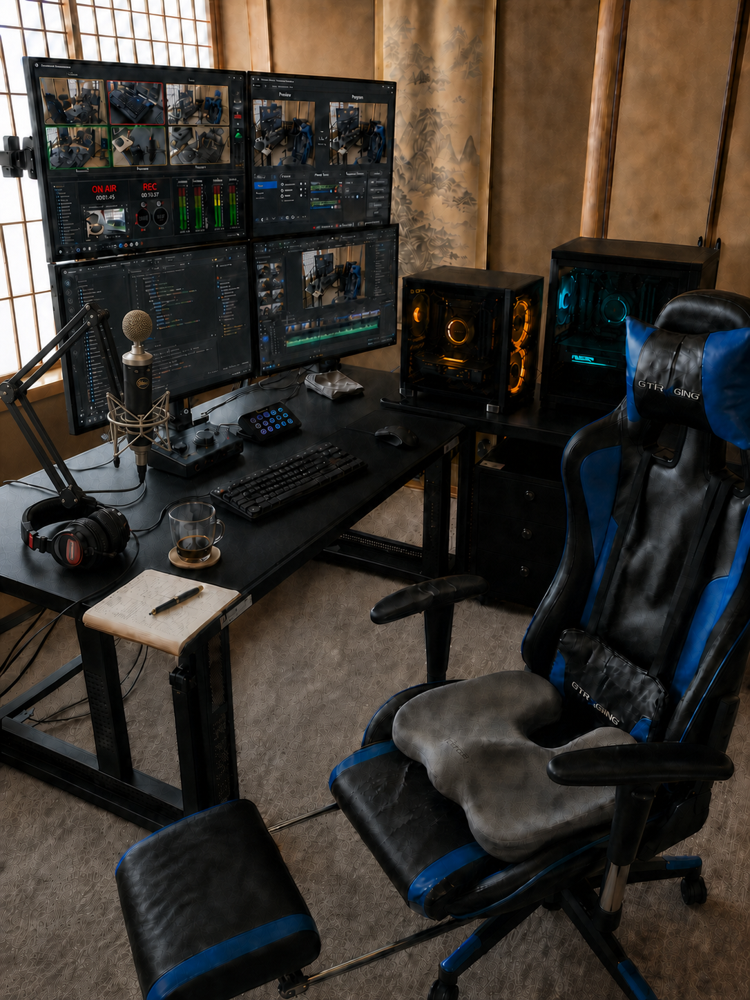

まず、動く形で確かめる。
言葉だけで決め切らず、小さな試作を通して要件と違和感を見つけます。
ROUTE 05 / MAKER PORTRAIT
屋号「開発と表現」を運営し、設計・実装・制作・発信を行っています。実名ではなく、活動名「いさむ」で統一しています。

技術を動かすだけでなく、誰かに届き、使われ、続いていくところまでを仕事にしたい。
20年以上のエンジニアリング経験を基盤に、システム開発、AI、自動化、映像、音楽、配信を横断しています。
一人で何でもできると見せたいのではありません。工程が切り替わる場所に立ち、必要な技術と表現をつなぎ、完成までの判断を見える形にすることが役割です。
活動では、できることと検証中のことを分けます。YouTubeでは完成物だけでなく、試作、失敗、改善、機材や制作工程の裏側も公開しています。
完成の見た目だけでなく、そこへ至る判断と、続けられる工程を残します。
言葉だけで決め切らず、小さな試作を通して要件と違和感を見つけます。
実装から制作、制作から公開への受け渡しまでを仕事の一部として設計します。
判断、手順、品質基準を記録し、作った人だけに依存しない状態を目指します。
目的と現在地を知る
小さく動かして確かめる
表現から要件へ戻る
判断を次の仕事へ渡す
見せるための架空スタジオではなく、開発、配信、収録、編集を往復している実際の構成です。
Codex、配信マルチビュー、OBS、DaVinci Resolveを同時に確認。
開発・制作と配信・処理を分けて運用。
XLR接続で収録し、編集と配信へ受け渡し。
収録音、整音、配信音声の確認に使用。
配信・収録・アプリ操作を手元へ集約。
作業と機材を分けつつ、手の届く範囲で接続。
長時間の開発・編集作業に使用。